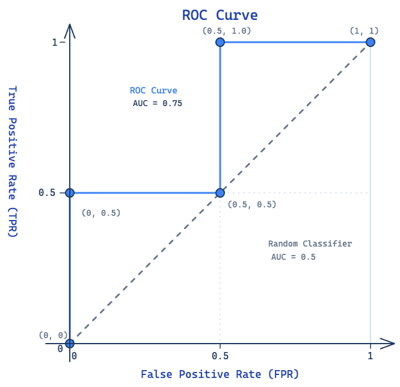
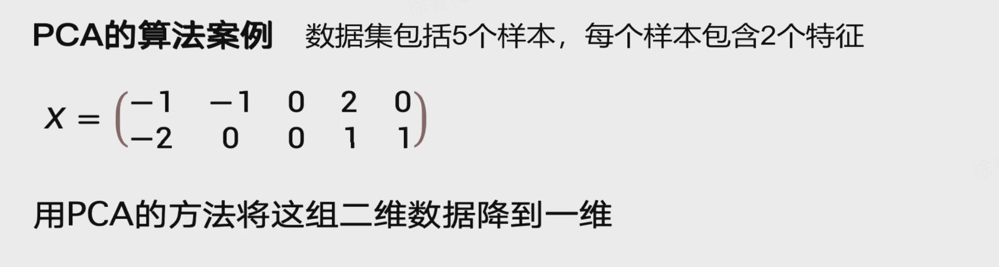
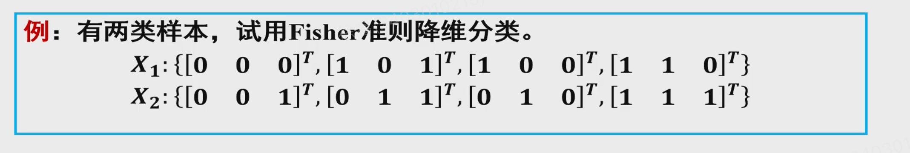
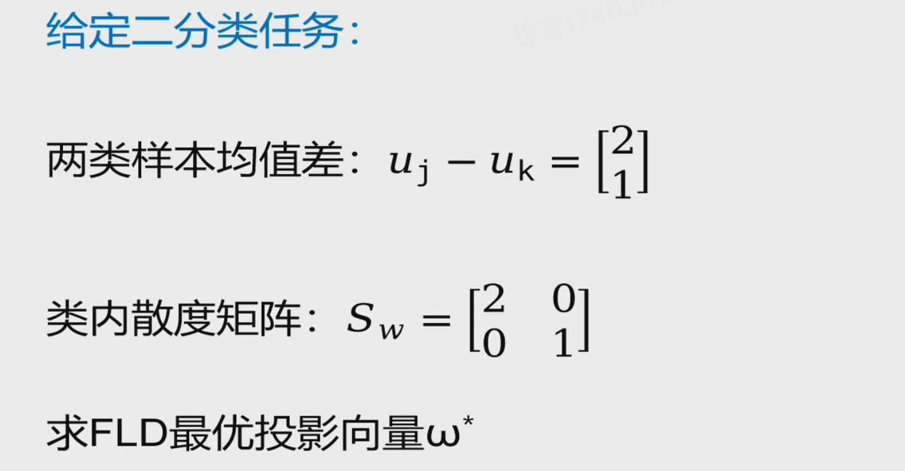
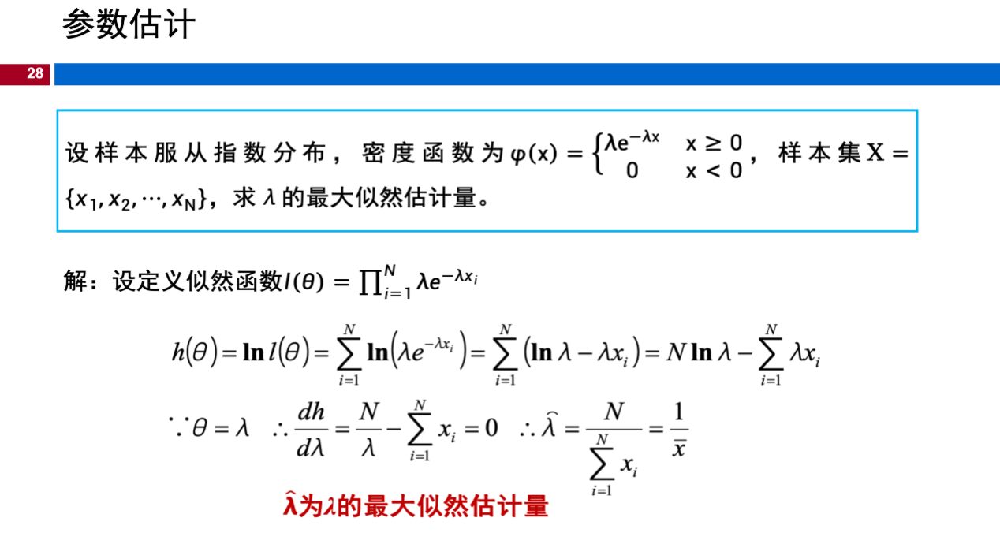
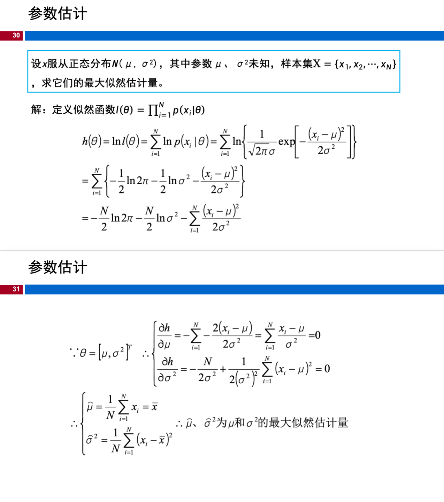
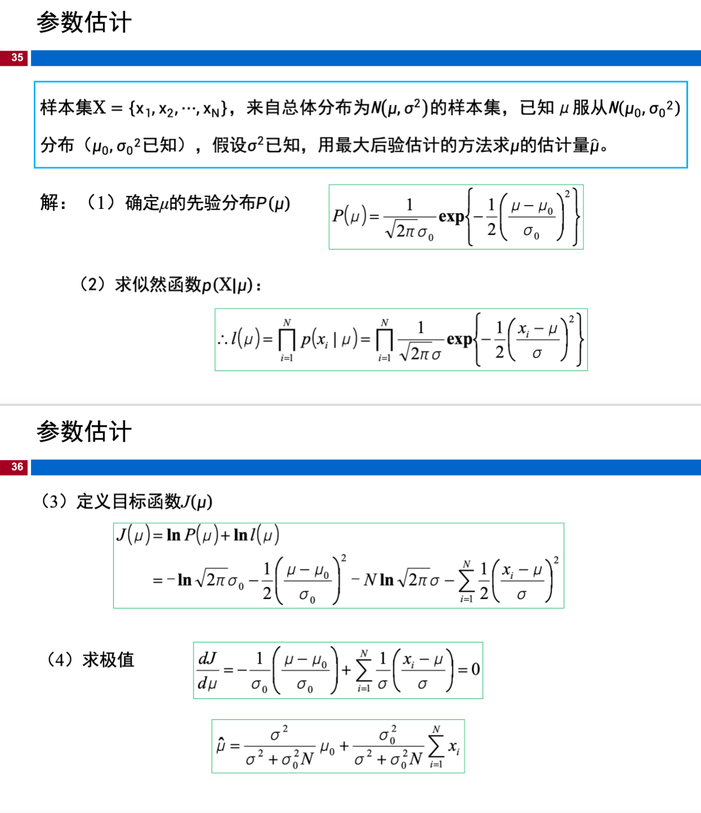

考试复习
评估
1. 模型出现过拟合时，其训练误差与测试误差的典型表现为（）
A.训练误差大，测试误差大
B.训练误差小，测试误差大
C.训练误差小，测试误差小
D.训练误差大，测试误差小
答案：B
解析：
过拟合是指模型在训练数据上学得太"死"，把训练数据中的噪声和随机波动也当成规律学进去了，导致泛化能力差。
| 情况 | 训练误差 | 测试误差 | 原因 |
|---|---|---|---|
| 过拟合 | 小 | 大 | 模型记住了训练样本的噪声，无法推广到新数据 |
| 欠拟合 | 大 | 大 | 模型太简单，连训练数据的规律都没学到 |
| 理想拟合 | 小 | 小 | 学到了真正的底层规律，泛化能力好 |
| 不可能情况 | 大 | 小 | 如果连训练集都学不好，几乎不可能在测试集上表现更好 |
过拟合本质上产生了巨大的训练-测试误差差距（generalization gap）：在训练集上表现近乎完美（误差很小），一到测试集/新数据就"翻车"（误差很大）。
这也印证了奥卡姆剃刀原则在机器学习中的应用——并非模型越复杂、在训练集上拟合得越好就代表模型越优，泛化能力才是衡量模型好坏的关键指标。
2. 下列方法中，无法缓解欠拟合的是（）
A. 增加模型的复杂度
B. 减小或移除过度的正则化
C.增加训练迭代次数
D. 增大L2 正则化系数
答案：D
解析：
欠拟合指模型对训练数据本身的学习都不充分。各项分析：
| 选项 | 能否缓解欠拟合 | 原因 |
|---|---|---|
| A. 增加模型复杂度 | ✅ 能 | 更复杂的模型（如加深网络、增加特征）能更好地拟合数据 |
| B. 减小/移除正则化 | ✅ 能 | 正则化约束模型复杂度，减小正则化相当于"松绑"，让模型更自由地拟合训练数据 |
| C. 增加训练迭代次数 | ✅ 能 | 更多轮训练可能让模型进一步收敛，降低训练误差 |
| D. 增大L2正则化系数 | ❌ 不能 | 增大正则化等于更强地约束模型，会使模型更简单，反而加重欠拟合 |
总结：正则化是防止过拟合的手段，增大正则化系数会加剧欠拟合。
3. 下列说法正确的是：
A. 为了防止过拟合，正则化系数越大越好。
B. 为了防止过拟合，应当选择尽可能简单的模型。
C. L2 正则化系数属于超参数
D. 正则化系数可以通过令损失函数对其求梯度为零计算出来。
答案：C
解析：
| 选项 | 正误 | 原因 |
|---|---|---|
| A | ❌ | 正则化系数并非越大越好。过大的正则化会过度约束模型，导致欠拟合。需要在验证集上调优 |
| B | ❌ | 模型也不是越简单越好。模型应匹配任务复杂度——过于简单会欠拟合，过于复杂会过拟合。应在偏差-方差中找平衡 |
| C | ✅ | L2正则化系数 λ 是超参数。它不在训练过程中通过梯度下降学习，而是在训练前由人设定或通过验证集调整 |
| D | ❌ | 正则化系数是超参数，不能通过求梯度为零直接算出。模型参数（如权重w）可以通过求导求解，但超参数需要靠交叉验证等方法选取 |
4. 关于训练/测试集划分的原则，下列说法错误的是（）
A. 测试集可以参与模型超参数调优
B.测试集在训练全过程中必须保持独立
C. 验证集用于模型选择与超参数调优
D.测试集仅用于模型最终泛化能力的评估
答案：A
解析：
| 选项 | 正误 | 原因 |
|---|---|---|
| A | ❌ 错误 | 测试集不能参与超参数调优。调参应使用验证集，测试集必须保持完全独立 |
| B | ✅ 正确 | 测试集在训练全过程中保持独立，避免数据泄露，保证评估的客观性 |
| C | ✅ 正确 | 验证集的作用就是进行模型选择和超参数调优 |
| D | ✅ 正确 | 测试集唯一的作用是评估最终模型的泛化能力 |
训练/验证/测试三者的职责必须严格分离，测试集一旦参与调参就会导致对泛化能力的高估。
5. 在K 折交叉验证中，每一轮训练使用,剩余折作为验证集。
答案：K-1 折；1 折
解析：
K 折交叉验证将数据集均匀划分为 K 份。每一轮中：
- 选取 K-1 折作为训练集
- 剩下的 1 折作为验证集
整个过程重复 K 次，每折恰好被用作验证集一次。最终将 K 轮验证结果取平均，得到对模型性能的可靠估计。
这样做的优点：每条样本都参与过验证，避免了单次划分的偶然性，尤其适合数据量较少的情况。
6. 数据集总共有100个样本，20个是正类，80个是负类。分类器预测结果如下：25个是正类（其中15个与真实标签相符，10个与真实标签不符），75个是负类（其中70个与真实标签相符，5个与真实标签不符），试计算分类器的准确性、查准率、查全率、F1值。
解析：
先根据题意列出混淆矩阵：
| 预测正类 | 预测负类 | 合计 | |
|---|---|---|---|
| 真实正类 | TP = 15 | FN = 5 | 20 |
| 真实负类 | FP = 10 | TN = 70 | 80 |
| 合计 | 25 | 75 | 100 |
计算各指标：
- 准确率 (Accuracy) = (TP + TN) / 总数 = (15 + 70) / 100 = 0.85
- 查准率 (Precision) = TP / (TP + FP) = 15 / (15 + 10) = 15/25 = 0.6
- 查全率 (Recall) = TP / (TP + FN) = 15 / (15 + 5) = 15/20 = 0.75
- F1 值 = 2 × (Precision × Recall) / (Precision + Recall) = 2 × (0.6 × 0.75) / (0.6 + 0.75) = 2 × 0.45 / 1.35 ≈ 0.667
7. 对于一个二分类任务，数据的标签和对于预测正例的概率如下表所示，试画出ROC 曲线并计算模型的AUC值。
| 样本序号 | 真实标签 | 预测正类概率 |
|---|---|---|
| 1 | 0 | 0.1 |
| 2 | 1 | 0.35 |
| 3 | 0 | 0.4 |
| 4 | 1 | 0.8 |
tip
TPR:实际是正类却被预测为正类的比例。正类判正率
FPR:实际是负类却被错误预测为正类的比例。负类误判正率
解析：
Step 1: 将样本按预测正类概率从大到小排序：
| 序号 | 真实标签 | 概率（降序） |
|---|---|---|
| 4 | 1(正) | 0.8 |
| 3 | 0(负) | 0.4 |
| 2 | 1(正) | 0.35 |
| 1 | 0(负) | 0.1 |
Step 2: 以每个概率作为阈值，计算 TPR 和 FPR：
- 总正例数 P = 2，总负例数 N = 2
| 阈值 | 预测为正的样本 | TP | FP | TPR = TP/P | FPR = FP/N |
|---|---|---|---|---|---|
| +∞ → 全部判负 | — | 0 | 0 | 0 | 0 |
| 0.8 | {4} | 1 | 0 | 1/2 = 0.5 | 0/2 = 0 |
| 0.4 | {4, 3} | 1 | 1 | 1/2 = 0.5 | 1/2 = 0.5 |
| 0.35 | {4, 3, 2} | 2 | 1 | 2/2 = 1.0 | 1/2 = 0.5 |
| 0.1 | {4, 3, 2, 1} | 2 | 2 | 2/2 = 1.0 | 2/2 = 1.0 |
Step 3: 绘制 ROC 曲线点（FPR, TPR）：(0,0) → (0, 0.5) → (0.5, 0.5) → (0.5, 1.0) → (1, 1)
ROC 曲线呈阶梯状：

Step 4: 计算 AUC（曲线下面积）：
AUC = 左侧矩形 + 上方矩形 = (0.5 - 0) × 0.5 + (1 - 0.5) × 1.0
= 0.5 × 0.5 + 0.5 × 1.0 = 0.25 + 0.5 = 0.75
8. 问题：训练集、验证集和测试集的作用分别是什么？
答：
- 训练集（Training Set）：用于训练模型，即拟合模型参数（如权重、偏置）。模型通过学习训练集中的样本调整自身参数。
- 验证集（Validation Set）：用于模型选择和超参数调优，如选择模型结构、正则化系数、学习率等。验证集不参与参数训练，避免了数据泄露。
- 测试集（Test Set）：用于评估最终模型的泛化能力。测试集在训练和调参过程中完全不被使用，仅用于最后给出模型的性能指标，是模型在新数据上表现的无偏估计。
三者的划分保证了模型评估的客观性——如果只用训练集+测试集，调参时会间接"窥探"测试集信息，导致过拟合于测试集。
9. 问题：如何通过ROC曲线评估分类器性能？
答：
ROC 曲线以FPR（False Positive Rate，假正例率） 为横轴、TPR（True Positive Rate，真正例率） 为纵轴，通过改变分类阈值绘制而成。
评估方式：
- AUC 值（曲线下面积）：最核心的量化指标。AUC ∈ [0, 1]，数值越大性能越好：
- AUC = 1.0：理想分类器，存在一个阈值可完美区分正负样本
- AUC = 0.5：随机猜测，曲线为对角线
- AUC < 0.5：比随机更差（反向使用则优于随机）
- 曲线形状定性判断：曲线越靠近左上角（(0, 1)点），说明 TPR 高、FPR 低时，分类器能在低误判率下获得高召回率，性能越好。
- 与准确率的对比优势：ROC 曲线不受类别不平衡影响，即使正负样本比例变化，曲线形状基本保持不变，因此更适合评估在不平衡场景下的模型表现。
10. 问题：准确率（Accuracy）的局限性是什么？为什么不平衡数据集任务中需要引入查准率、查全率等其它评价指标？
答：
局限性： 准确率 = (TP + TN) / 总数，它把所有样本等权看待，在类别不平衡时会产生误导性结果。
举例： 某检测任务中100个样本，95个是正常（负类），5个是异常（正类）。若分类器将所有样本判为"正常"：
- Accuracy = 95/100 = 95%，看似很高
- 但实际上一个异常都没检测出来，查全率 Recall = 0/5 = 0
为何需要查准率、查全率：
- 查准率（Precision）：关注"预测为正的样本中有多少是真正例"，回答"判对了多少"——在"宁缺毋滥"场景（如垃圾邮件过滤，不想误删重要邮件）中很重要。
- 查全率（Recall）：关注"真正的正例中有多少被找出来了"，回答"找全了没有"——在"宁错杀不放过"场景（如疾病筛查，不能漏掉患者）中很重要。
- 两者通常是一对矛盾，提高阈值查准率上升但查全率下降。F1 值调和二者，在二指标不可偏废时使用。
11. 已知：TP=50, FN=10, FP=5, TN=100，求：查准率、查全率、F1。
解析：
- 查准率 (Precision) = TP / (TP + FP) = 50 / (50 + 5) = 50/55 ≈ 0.909
- 查全率 (Recall) = TP / (TP + FN) = 50 / (50 + 10) = 50/60 ≈ 0.833
- F1 值 = 2 × (P × R) / (P + R) = 2 × (0.909 × 0.833) / (0.909 + 0.833) = 2 × 0.757 / 1.742 ≈ 0.869
PCA主成分分析
1. 主成分分析法（PCA）的核心目的是（）
A.增加数据维度，提升模型复杂度
B.降低数据维度，保留数据核心信息，减少冗余
C.选择合适的特征，降低特征维度
D.对数据进行标准化处理
答案：B
解析：
PCA（Principal Component Analysis）的核心思想是通过正交变换，将原始高维数据投影到低维空间，同时最大化保留数据的方差（信息量），减少特征间的冗余相关性。
| 选项 | 正误 | 原因 |
|---|---|---|
| A | ❌ | PCA 是降维方法，不是增加维度 |
| B | ✅ | 降低维度，保留核心信息，去除冗余——这正是 PCA 的核心目的 |
| C | ❌ | "选择合适的特征"描述的是特征选择（Feature Selection），而非 PCA。PCA 是通过线性变换构造新特征（主成分），不是从原始特征中挑选 |
| D | ❌ | 标准化是数据预处理手段，不是 PCA 的目的。PCA 通常在标准化之后再进行 |
PCA 的关键区分：PCA 是特征提取（构造新特征），不是特征选择（挑选旧特征）。
2. 若原始数据为100个样本、20个特征，使用PCA降维到5维后，得到的数据形状为（）
A. (100, 20)
B. (20, 5)
C. (100, 5)
D. (5, 100)
答案：C
解析：
原始数据形状为 (100, 20)，即 100 个样本、20 个特征。PCA 降维后，样本数量不变，特征维度从 20 降到 5，所以新数据形状为 (100, 5)。
记忆技巧：PCA 降维只压缩"特征列"，不改变"样本行"。
3. 在PCA降维过程中，主成分的选择依据是（）
A. 原特征的均值大小
B. 原特征的方差大小
C. 协方差矩阵的特征值大小
D. 样本的数量多少
答案：C
解析：
PCA 的步骤：计算协方差矩阵 → 对协方差矩阵做特征值分解 → 取特征值最大的前 k 个特征向量作为主成分方向。
| 选项 | 正误 | 原因 |
|---|---|---|
| A | ❌ | PCA 与均值无关（数据通常已中心化，均值为 0） |
| B | ❌ | 衡量的是投影方向上的方差（即特征值），而不是原始特征各自的方差 |
| C | ✅ | 特征值越大 → 该方向方差越大 → 保留信息越多 → 优先选为主成分 |
| D | ❌ | 样本数不影响主成分的选择，只影响降维后的维度上限 |
4. PCA中，协方差矩阵的主要作用是（）
A. 衡量样本之间的相似度
B. 衡量不同特征之间的相关性
C. 对数据进行归一化处理
D. 计算特征的方差大小
答案：B
解析：
协方差矩阵的元素 (i, j) 表示第 i 个特征与第 j 个特征的协方差，反映了特征之间的线性相关性：
- 正协方差 → 正相关（一个特征增大，另一个也增大）
- 负协方差 → 负相关（一个特征增大，另一个减小）
- 协方差 ≈ 0 → 特征间几乎无关
PCA 的目标是找到一组新坐标轴（主成分），使得投影后各维度之间的协方差为零（去相关），因此协方差矩阵是 PCA 的核心运算对象。
5. PCA 计算题

解析：

注：第一步零均值化，每一行都减去这个均值，就能做到零均值化。
变式
在这个矩阵中，第一行是特征1，第二行是特征2；每一列是一个样本。现在我们用 PCA 将它降维到一维。

Fisher线性判别
1. Fisher 线性判别（FLD）的核心目标是（）
A. 最小化类间距离，最大化类内距离
B. 最大化类间离散度，最小化类内离散度
C. 从原始特征中挑选最有利于分类的特征
D. 寻找数据方差最大的投影方向
答案：B
解析：
FLD 的目标是找一个投影方向 w，使得投影后：
- 类间离散度 SB 尽量大（不同类别的样本均值投影后分得越开越好）
- 类内离散度 SW 尽量小（同一类别的样本投影后聚得越紧越好）
目标函数为广义瑞丽商：J(w) = (wTSBw) / (wTSWw)
| 选项 | 正误 | 原因 |
|---|---|---|
| A | ❌ | 弄反了——应该最大化类间、最小化类内 |
| B | ✅ | 最大化类间离散度、最小化类内离散度 |
| C | ❌ | 这是特征选择，不是 FLD。FLD 是寻找最佳投影方向，而非挑选特征 |
| D | ❌ | 这是 PCA 的目标，不是 FLD。FLD 利用类别标签，是有监督方法 |
2. 以下关于 Fisher 散度矩阵说法错误的是（）
A. SW 为类内离散度矩阵
B. SB 为类间离散度矩阵
C. 目标函数的大小与投影向量 w 的长度无关
D. 类内散度越大，越有利于分类
答案：D
解析：
| 选项 | 正误 | 原因 |
|---|---|---|
| A | ✅ | SW（Within-class scatter）类内离散度矩阵——正确 |
| B | ✅ | SB（Between-class scatter）类间离散度矩阵——正确 |
| C | ✅ | J(w) = (wTSBw) / (wTSWw)，分子分母都是 w 的二次型，w 等比例缩放时比值不变。因此 J 与 w 的长度无关，只与方向有关 |
| D | ❌ | 类内散度越小越好（同类样本越紧凑），越大越不利于分类 |
3. FLD 与 PCA 相比，最核心的区别是（）
A. FLD 计算复杂度更低
B. FLD 属于有监督降维/判别，PCA 是无监督降维
C. FLD 只能用于二维数据
D. PCA 可用于分类，FLD 只能用于降维
答案：B
解析：
| 对比维度 | PCA | FLD |
|---|---|---|
| 是否使用类别标签 | ❌ 无监督 | ✅ 有监督 |
| 优化目标 | 最大化投影方差 | 最大化类间 / 最小化类内离散度 |
| 适用场景 | 通用降维 | 分类任务中的降维 / 特征提取 |
| 选项 | 正误 | 原因 |
|---|---|---|
| A | ❌ | 两者计算复杂度相似，都需要特征值分解 |
| B | ✅ | FLD 利用类别标签信息，属于有监督方法；PCA 不使用标签，是无监督方法——这是最核心的区别 |
| C | ❌ | FLD 可用于任意维度数据，不仅限于二维 |
| D | ❌ | FLD 本身就可用于分类（Fisher 线性判别分类器），PCA 不能直接用于分类 |
4. 广义瑞丽商的表达式：
J(w) = (wTSBw) / (wTSWw)
其中 SB 为类间离散度矩阵，SW 为类内离散度矩阵。最大化 J(w) 等价于让投影后类间距离尽可能大、类内距离尽可能小。
5. Fisher 最优投影向量 w 满足广义特征方程：
SB w = λ SW w
最优投影方向 w 是 SW-1SB 的最大特征值对应的特征向量。对于二分类问题，解析解为：
w = SW-1 (μ1 - μ2)
即类内散度矩阵的逆乘以两类均值之差。
6. Fisher 三维数据计算题

解析：
这是一道经典的 Fisher 线性判别分析（LDA）计算题，核心思想是”类内方差尽可能小，类间方差尽可能大”。
(1) 计算两类样本的均值向量
(2) 计算类内离散度矩阵 Sw
Sw = Sw1 + Sw2，其中 Swi = Σ(x - mi)(x - mi)T
(注：这里两类的离散度矩阵刚好相等)
(3) 计算最佳投影方向 W
W = Sw-1(m1 - m2)
(缩放 W 的常数倍不影响投影方向，可取 W = [1, -1, -1]T)
(4) 样本降维与分类阈值
投影公式：y = WTx = x(1) - x(2) - x(3)
| X1 样本投影 | y | X2 样本投影 | y |
|---|---|---|---|
| y1,1 = 0 - 0 - 0 | 0 | y2,1 = 0 - 0 - 1 | -1 |
| y1,2 = 1 - 0 - 1 | 0 | y2,2 = 0 - 1 - 1 | -2 |
| y1,3 = 1 - 0 - 0 | 1 | y2,3 = 0 - 1 - 0 | -1 |
| y1,4 = 1 - 1 - 0 | 0 | y2,4 = 1 - 1 - 1 | -1 |
- X1 降维后均值：m̃1 = (0+0+1+0)/4 = 0.25
- X2 降维后均值：m̃2 = (-1-2-1-1)/4 = -1.25
分类阈值：y0 = (m̃1 + m̃2) / 2 = (0.25 + (-1.25)) / 2 = -0.5
最终结论：
- 降维向量：W = [1, -1, -1]T
- 分类准则：对于未知样本 x，计算 y = WTx
- 若 y > -0.5 → 属于 X1 类
- 若 y < -0.5 → 属于 X2 类
7. Fisher 投影向量计算题

解析：
(1) 确定理论公式
最优投影向量：ω* = Sw-1(μj - μk)
(2) 求 Sw 的逆矩阵
对角矩阵求逆：主对角线元素取倒数：
(3) 计算投影向量 ω*
最终答案： ω* = [1, 1]T
(注：投影向量关注的是方向，任何非零常数倍数等价)
SVM支持向量机
1. SVM 的核心思想是：
A）最小化经验风险
B）最大化分类间隔
C）最小化结构风险
D）最大化后验概率
答案：B
解析：
SVM（Support Vector Machine）的核心思想是找到一个超平面，使得不同类别样本到超平面的最小距离（即间隔 margin）最大化。最大化间隔有助于提升泛化能力。
| 选项 | 正误 | 原因 |
|---|---|---|
| A | ❌ | 最小化经验风险是传统机器学习方法的思路，SVM 追求的是结构风险最小化 |
| B | ✅ | 最大化分类间隔是 SVM 的核心思想，”间隔最大化”是 SVM 的灵魂 |
| C | ❌ | 结构风险最小化是 SVM 的理论框架，但核心思想表述为”最大化间隔”更准确 |
| D | ❌ | 最大化后验概率是生成模型（如朴素贝叶斯）的思路 |
2. SVM 中的软间隔（Soft Margin）用于处理：
A）线性不可分数据
B）过拟合问题
C）类别不平衡
D）高维特征
答案：A
解析：
硬间隔要求所有样本严格满足 yi(wTxi+b) ≥ 1，这在数据存在噪声或近似线性可分时无法实现。软间隔引入松弛变量 ξi，允许少量样本位于间隔内部甚至错误分类，从而处理线性不可分/近似线性可分的数据。
3. SVM中核函数的作用是：
A）降低特征维度
B）解决线性不可分问题
C）减少计算复杂度
D）直接求解非线性问题
答案：B
解析：
核函数（Kernel Function）的核心作用是通过隐式地将数据映射到高维空间，使在原始空间中线性不可分的数据在高维空间中变得线性可分。同时核函数避免了显式计算高维映射 φ(x)，这称为”核技巧”（Kernel Trick）。
| 选项 | 正误 | 原因 |
|---|---|---|
| A | ❌ | 核函数是升维而非降维 |
| B | ✅ | 通过映射到高维空间，间接解决非线性分类问题 |
| C | ❌ | 核函数本身不减少计算量，但避免了显式计算高维内积 |
| D | ❌ | 核函数不直接求解，而是间接将非线性问题转化为高维线性问题 |
4. 支持向量是指：
A）所有训练样本
B）距离超平面最近的样本
C）分类错误的样本
D）特征值最大的样本
答案：B
解析：
支持向量（Support Vector）是距离分类超平面最近的那些样本点。它们”支撑”着超平面的位置——SVM 的最终模型只由支持向量决定，与其他非支持向量的训练样本无关。这也是 SVM 稀疏性的来源。
5. SVM的对偶问题与原问题的关系是：
A）对偶问题更难解
B）对偶问题的最优值大于原问题
C）对偶问题和原问题的解等价
D）对偶问题无法处理不等式约束
答案：C
解析：
SVM 的原问题是凸二次规划问题，满足强对偶性（Slater 条件），因此原问题和对偶问题的最优值相等，解等价。转对偶的好处是：
- 引入核函数更方便（对偶问题只出现样本内积）
- 约束变为等式约束，更简洁
- 可用 SMO 等算法高效求解
6. 关于支持向量机基本型中间隔、支持向量和超平面 wTx+b=0 的说法，下列说法正确的是？
A）对于线性可分的训练样本，存在唯一的超平面将训练样本全部分类正确
B）对于线性可分的训练样本，支持向量机算法学习得到的能够将训练样本正确分类且具有”最大间隔”的超平面是存在并且唯一的
C）支持向量机训练完成后，最后的解与所有训练样本都有关
D）间隔只与w有关，与b无关
答案：B
解析：
| 选项 | 正误 | 原因 |
|---|---|---|
| A | ❌ | 将样本正确分类的超平面有无数个，不唯一 |
| B | ✅ | SVM 寻找的是唯一的最大间隔超平面。间隔最大化这个约束保证了唯一性 |
| C | ❌ | SVM 的解只与支持向量有关，与其他样本无关（稀疏性） |
| D | ❌ | 间隔 = 2 / ‖w‖，b 影响超平面的平移，也影响间隔的具体位置 |
7. 下面关于支持向量机的优化错误的是？
A）可以通过常规的优化计算包求解
B）可以通过SMO进行高效的求解
C）在使用SMO时需要先推导出支持向量机的对偶问题
D）SMO需要迭代的进行求解，且每一步迭代的子问题不存在闭式解
答案：D
解析：
| 选项 | 正误 | 原因 |
|---|---|---|
| A | ✅ | SVM 是凸二次规划，可用通用 QP 求解器 |
| B | ✅ | SMO（Sequential Minimal Optimization）是 SVM 的高效求解算法 |
| C | ✅ | SMO 求解的是对偶问题，需要先推导对偶形式 |
| D | ❌ | SMO 每一步只优化两个变量，该子问题存在闭式解（解析解），不需要数值迭代 |
8. 若一个对称函数对于任意数据所对应的核矩阵____，则它就能作为核函数来使用。
A）正定
B）半正定
C）负定
D）半负定
答案：B
解析：
Mercer 定理：一个对称函数 K(x, z) 能作为合法核函数的充要条件是，对于任意数据集，其对应的核矩阵（Gram 矩阵）是半正定（Positive Semi-definite）的。
9. 将样本映射到高维空间后，支持向量机问题的表达式为：
答案：A
解析：
SVM 基本型（硬间隔）的标准化形式为：
关键点：
- 约束中是 +b（不是 -b），因为超平面定义为 wTx + b = 0
- 约束 ≥ 1（不是 -1），1 是函数间隔的最小要求
- φ(x) 表示将 x 映射到高维空间
10. 下面哪一项不是支持向量机基本型得到对偶问题的求解步骤：
A）引入拉格朗日乘子得到拉格朗日函数
B）对拉格朗日函数求偏导并令其为0
C）回带变量关系
D）梯度下降
答案：D
解析：
SVM 对偶问题的推导步骤：
- 引入拉格朗日乘子 αi，构造拉格朗日函数
- 对 w 和 b 求偏导并令为 0，得到 w = Σαiyixi 和 Σαiyi = 0
- 回带这些关系代入拉格朗日函数，消去 w 和 b，得到仅含 α 的对偶问题
梯度下降不在上述步骤中——SVM 对偶问题通常用 SMO 算法求解，而非梯度下降。
11. 支持向量机的解具有什么性质？——（三个字）
答案：稀疏性
解析：
SVM 的解具有稀疏性（Sparsity）：训练完成后，大部分样本对应的拉格朗日乘子 αi = 0，只有少数支持向量的 αi > 0。因此最终模型只由少量支持向量决定，计算效率高。
12. 用SVM解决多分类任务，假设类别总数为10，OvO策略和OvA策略分别要训练多少个分类器？
解析：
- OvO（一对一，One-vs-One）：每两类之间训练一个分类器。总数为 C(10, 2) = 10×9/2 = 45 个
- OvA/OvR（一对多，One-vs-All/Rest）：每个类别与其余所有类别训练一个分类器。总数为 10 个
概率方法



8-10章串题
1. 霍夫曼编码的核心思想是？
A. 对高频符号分配长编码，低频符号分配短编码
B. 对高频符号分配短编码，低频符号分配长编码
C. 所有符号分配等长编码
D. 随机分配编码长度
答案：B
解析：
霍夫曼编码是一种最优前缀码，核心思想是根据符号出现概率进行变长编码：
- 高频符号 → 短编码（节省存储空间）
- 低频符号 → 长编码（可以容忍，因为出现次数少）
这样可以使得平均编码长度最短，接近信息熵的下界。
2. 信息熵的物理意义是？
A. 数据的存储大小
B. 随机变量的不确定性度量
C. 数据的压缩比
D. 信号的传输速率
答案：B
解析：
信息熵 H(X) = -Σ p(x) log p(x)，是随机变量不确定性的度量：
- 熵越大 → 不确定性越大 → 包含的信息量越多
- 熵越小 → 不确定性越小 → 结果越确定
- 熵 = 0 → 完全确定（某一事件概率为 1，其余为 0）
信息熵也代表了无损编码该随机变量的理论最小平均编码长度。
3. 当随机变量 X 的分布为均匀分布时，其信息熵如何？
A. 最小
B. 0
C. 不确定
D. 最大
答案：D
解析：
在给定取值个数的情况下，均匀分布时信息熵最大。因为每种结果等可能出现，不确定性最高，无法偏向任何一个取值。
这也是最大熵原理的基础——在没有额外信息时，应选择熵最大的分布（均匀分布）作为先验。
4. 条件熵 H(Y|X) 的含义是？
A. 已知 X 时 Y 的剩余不确定性
B. X 和 Y 的共同不确定性
C. X 的不确定性
D. Y 的不确定性
答案：A
解析：
H(Y|X) 表示在已知随机变量 X 的条件下，Y 还有多少不确定性（剩余不确定性）。
关系式：H(Y|X) = H(X,Y) - H(X)
- 若 X 完全决定 Y，则 H(Y|X) = 0（已知 X 后 Y 不再有不确定性）
- 若 X 与 Y 独立，则 H(Y|X) = H(Y)（知道 X 对预测 Y 毫无帮助）
5. 关于最小冗余最大相关（mRMR）特征选择算法，下列说法正确的是？
A. 最大化特征之间的相关性，最小化特征与标签的相关性
B. 最大化特征与类别标签的相关性，最小化特征彼此之间的冗余度
C. 依靠方差大小筛选特征
D. 需要对原始特征进行变换
答案：B
解析：
mRMR（minimal Redundancy Maximal Relevance）的核心：
- 最大相关（Max Relevance）：选出的特征与类别标签相关性尽可能大
- 最小冗余（Min Redundancy）：选出的特征彼此之间相关性尽可能小（避免冗余）
| 选项 | 正误 | 原因 |
|---|---|---|
| A | ❌ | 说反了——应该最大化与标签的相关，最小化特征间的冗余 |
| B | ✅ | 正是 mRMR 的核心思想 |
| C | ❌ | 那是方差选择法（Variance Threshold），不是 mRMR |
| D | ❌ | mRMR 是特征选择（过滤式），不是特征变换（如 PCA） |
6. 在分类模型训练中，最小化交叉熵的本质是（）
A. 最大化模型参数数量
B. 最小化真实分布与预测分布之间的KL散度
C. 增大数据本身的信息熵
D. 降低模型拟合能力
答案：B
解析：
交叉熵损失：L = -Σ p(x) log q(x)，其中 p 是真实分布，q 是模型预测分布。
KL 散度：DKL(p‖q) = Σ p(x) log(p(x)/q(x)) = 交叉熵 - 信息熵
由于真实分布 p 的信息熵是常数，最小化交叉熵等价于最小化 KL 散度，即让预测分布 q 尽可能接近真实分布 p。
7. ID3 决策树选择分裂特征的依据是？
A. 基尼指数
B. 信息增益比
C. 均方误差
D. 信息增益
答案：D
解析：
| 算法 | 分裂依据 |
|---|---|
| ID3 | 信息增益（Information Gain） |
| C4.5 | 信息增益比（Gain Ratio） |
| CART | 基尼指数（Gini Index）—分类；均方误差—回归 |
ID3 选择信息增益最大的特征进行分裂。信息增益越大，说明使用该特征划分后不确定性下降越多。
8. 信息增益的计算公式是？（Y 为目标变量，X为特征）
A. H(X) - H(X|Y)
B. H(Y) - H(Y|X)
C. H(X,Y)
D. H(Y|X)
答案：B
解析：
信息增益 = 划分前的熵 - 划分后的条件熵
Gain(Y, X) = H(Y) - H(Y|X)
即：使用特征 X 划分后，目标变量 Y 的不确定性减少了多少。增益越大说明 X 对 Y 的分类帮助越大。
9. ID3 决策树如何处理连续型特征？
A. 直接使用连续值进行分裂
B. 先离散化为离散特征再分裂
C. 忽略连续型特征
D. 使用基尼指数替代信息增益
答案：B
解析：
ID3 算法本身不能直接处理连续型特征。对于连续特征，需要先离散化（如分箱、二分法找最优切分点），然后再按离散特征的方式计算信息增益进行分裂。
C4.5 和 CART 原生支持连续特征处理（选择最优二分点）。
10. 余弦相似度主要衡量两个向量的？
A. 数值大小差异
B. 空间夹角、方向相似度
C. 向量距离远近
D. 数据方差大小
答案：B
解析：
余弦相似度：cos(θ) = (A·B) / (‖A‖‖B‖)
它衡量的是两个向量的方向是否一致，取值 [-1, 1]：
- 1 → 方向完全相同
- 0 → 正交（无关）
- -1 → 方向完全相反
与欧氏距离的区别：余弦相似度对向量的长度/模长不敏感，适合文本相似度等高维稀疏场景。
11. 关于幂平均，下列说法错误的是（）
A. 幂平均随幂次增大单调递增
B. 幂次为1时为算术平均
C. 幂次为2时为平方平均
D. 幂次趋近无穷大时等于最小值
答案：D
解析：
幂平均 Mp = (1/n Σxip)1/p
| 幂次 p | 名称 | 公式 |
|---|---|---|
| p → -∞ | 最小值 | min(xi) |
| p = -1 | 调和平均 | n / Σ(1/xi) |
| p = 0 | 几何平均 | (Πxi)1/n |
| p = 1 | 算术平均 | Σxi / n |
| p = 2 | 平方平均（RMS） | √(Σxi2 / n) |
| p → +∞ | 最大值 | max(xi) |
- A ✅：幂平均随 p 增大单调不减
- D ❌：p → +∞ 时趋近最大值，而非最小值
12. 线性回归采用最小二乘法的核心优化目标是？
A. 最小化交叉熵损失
B. 最小化预测值与真实值的平方误差和
C. 最大化数据熵
D. 最小化模型参数
答案：B
解析：
最小二乘法（Ordinary Least Squares, OLS）的目标函数：
min Σ(yi - ŷi)² = min ‖y - Xw‖²
即最小化残差平方和（Sum of Squared Errors）。解析解为 w = (XTX)-1XTy。
13. 线性回归模型训练中，若训练误差低、测试误差很高，该现象称为？
A. 欠拟合
B. 过拟合
C. 早停
D. 归一化失效
答案：B
解析：
训练误差低 + 测试误差高 = 过拟合的典型表现。模型过度学习了训练数据中的噪声和细节，泛化能力差。
14. 极大似然估计（MLE）的核心思想是？
A. 寻找参数使先验概率最大
B. 寻找参数使当前样本出现的概率最大
C. 人为给定固定参数
D. 最小化后验概率
答案：B
解析：
MLE（Maximum Likelihood Estimation）：选择参数 θ，使得在 θ 下观测到当前样本的概率（似然）最大。
θMLE = arg maxθ P(D | θ)
与贝叶斯估计的区别：MLE 不考虑先验，把参数视为未知常数而非随机变量。
15. 直方图概率密度估计最大的缺点是？
A. 计算速度极慢
B. 存在边界不连续、台阶状突变
C. 属于参数估计方法
D. 需要预先假设分布类型
答案：B
解析：
直方图密度估计（非参数方法）的缺点：
- 边界不连续/台阶状：在 bin 的边界处密度突变为 0，曲线不光滑
- 对 bin 宽度敏感：太宽丢失细节，太窄引入噪声
- 维度灾难：高维时每个 bin 中的样本急剧减少
16. 相比于直方图估计，核密度估计的主要优势是？
A. 计算量小
B. 生成的密度曲线连续光滑
C. 固定窗宽
D. 可以处理多维数据
答案：B
解析：
核密度估计（KDE）用一个核函数（如高斯核） 平滑地加权每个样本，使得估计出的密度函数连续光滑。而直方图在 bin 边界处有突变。
KDE 公式：f̂(x) = (1/nh) Σ K((x-xi)/h)，其中 K 为核函数，h 为带宽。